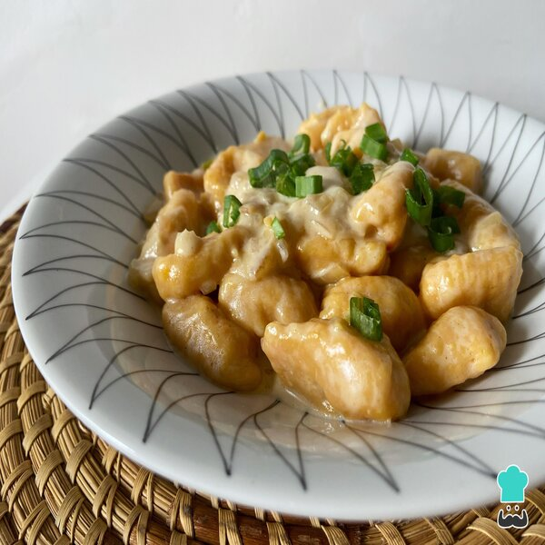

Ñoquis al verdeu

La receta del 29 versión rápida,fácil y deliciosa. Ideal para pasar un domingo en familia
INGREDIENTES PARA ESTA PREPARACIÓN:
- 1 kg de papa.
- 300 gr de harina 0000.
- 1 Huevo.
- Sal & pimienta, a gusto.
PARA LA SALSITA
- 2 unidades de cebolla.
- 2 ramitos de cebolla de verdeo
- Medio morrón rojo o verde
- 200 ml crema de leche
- Sal & pimienta, a gusto.
EL PASO A PASO
- Lo primero que vamos a hacer lavar bien las papas ya que las vamos a hervir con cáscara. Esto es muy importante para que luego los ñoquis de papa no se desarmen, ya que al cocerlas con cáscara evitamos que absorban agua en exceso. Hacemos un corte horizontal por todo el contorno de la papa, en el video se ve bien, y las llevamos a una olla con agua. Cocinar hasta que al pincharlas se caigan.
- Las retiramos y las dejamos enfriar sólo para no quemarnos. Con el corte que hicimos, la cáscara tiene que salir muy fácil en dos partes.
- Pisamos las papas todavía en caliente como todo puré digno, agregamos sal, pimienta y mezclamos super bien. Agregamos el huevo batido y la harina. No le vamos a agregar toda la harina de una, nos vamos a guardar un poco para ver cómo viene. Las cantidades son más bien proporcionales, puede ser que la papa haya absorbido más agua o que el huevo sea más chico, así que vamos a agregar la harina de a poco.
- Unir con la mano hasta que se pueda pasar hasta la mesada y terminar de integrar. Si en este paso ven que hace falta más harina, tenemos el resto para agregar. No es necesario amar mucho, la idea es llegar a una masa unida y uniforme sin tocarla mucho.
- Cortar tiras de masa y hacer chorricitos o rollitos, y cortar trocitos de unos 2 o 3 cm de ancho, pueden enharinar el cuchillo para que sea más fácil.
- Ahora viene la magia, vamos a pasarlos por la herramienta para darle forma a los ñoquis de papa de arriba hacia abajo. También pueden usar un tenedor enharinado que también les deja una forma similar. Colocarlos en una placa enharinada sin que se toquen para que no se pegoteen. Y claro, también pueden hacerlos sin la herramienta y que queden en su versión más rústica.
- Para la cocción, llevar de a tandas a una olla con agua hirviendo con sal. Van a ver que se caen al fondo. Cuando suben, los dejan 1 minuto y ya están listos!
- Antes de que hierva el agua de los ñoquis, te vasa picar y saltear todas las verduritas en una sartén con un poco de aceite para la salsita rica. Cuando este en cocción agregarle la crema de leche y ualá!
Leer completo aquí
Y TE DEJO EL MEJOR POSTRE DO MONDO
Volver al inicio